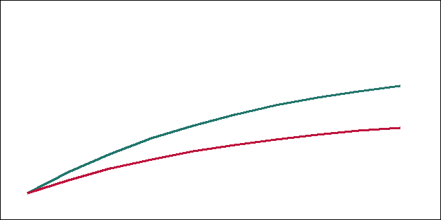

Filtered Attention for Long-Context Retrieval
Abstract
Long-context language models often fail to retrieve facts buried in the middle of their input. We introduce filtered attention, a lightweight scoring layer that prunes irrelevant key blocks before the softmax. On the NeedleBench and LongQA benchmarks, filtered attention improves retrieval recall by 11.4 points at 128k tokens while reducing attention FLOPs by 38%. Code is available at https://github.com/ada/filtered-attention.
1 Introduction
A new opening paragraph was added in the second version to motivate the problem with a concrete example from contract review.
Long-context language models often struggle to use information placed in the middle of their input (Smith and Doe, 2024). Let denote the parameters of a pretrained transformer, and let be the number of key blocks kept per query.
We propose filtered attention, which scores every key block and keeps only the top blocks before computing attention. The threshold controls how aggressive the filter is.
Retrieval failures are not uniform across the context window. Facts near the beginning and the end of the input are recovered reliably, while facts in the middle are frequently ignored, a pattern earlier work calls the lost-in-the-middle effect.
We argue that much of this failure comes from attention mass being spread over many irrelevant blocks. When most of the probability mass goes to filler text, the few tokens that matter receive too little weight to influence the output.
Our approach keeps the base model frozen. We add a small scoring layer that looks at each block of keys and decides whether the block is worth attending to at all, which keeps training cheap and the method easy to retrofit.
2 Method
For a query q and block b_i we compute a block score and keep the blocks whose score exceeds . Each block holds keys.
Filtered attention improves retrieval recall by 11.4 points at 128k tokens on NeedleBench, as shown in Table 1.
The scoring layer is trained with a contrastive objective on synthetic retrieval tasks, then evaluated without further tuning on natural documents such as legal contracts, scientific papers, and long chat transcripts.
We also study how the filter interacts with positional encodings. Rotary embeddings remain unchanged, and we find no degradation on short-context tasks where the filter keeps nearly every block.
Finally, we analyze the compute budget. Because pruned blocks never enter the softmax, the savings grow with context length, which makes the method most useful exactly where long-context models are most expensive.

| Method | NeedleBench | LongQA |
| Full attention | 61.2 | 48.9 |
| Filtered attention | 72.6 | 55.0 |
3 Related work
Sparse attention has a long history (Child et al., 2019), and retrieval heads were recently identified in long-context models (Smith and Doe, 2024).
Retrieval failures are not uniform across the context window. Facts near the beginning and the end of the input are recovered reliably, while facts in the middle are frequently ignored, a pattern earlier work calls the lost-in-the-middle effect.
We argue that much of this failure comes from attention mass being spread over many irrelevant blocks. When most of the probability mass goes to filler text, the few tokens that matter receive too little weight to influence the output.
Our approach keeps the base model frozen. We add a small scoring layer that looks at each block of keys and decides whether the block is worth attending to at all, which keeps training cheap and the method easy to retrofit.
The scoring layer is trained with a contrastive objective on synthetic retrieval tasks, then evaluated without further tuning on natural documents such as legal contracts, scientific papers, and long chat transcripts.
We also study how the filter interacts with positional encodings. Rotary embeddings remain unchanged, and we find no degradation on short-context tasks where the filter keeps nearly every block.
Finally, we analyze the compute budget. Because pruned blocks never enter the softmax, the savings grow with context length, which makes the method most useful exactly where long-context models are most expensive.
References
- Smith and Doe (2024)John Smith and Jane Doe. Retrieval heads in long-context transformers. arXiv preprint arXiv:2402.00002, 2024.
- Child et al. (2019)Rewon Child, Scott Gray, Alec Radford, and Ilya Sutskever. Generating long sequences with sparse transformers. 2019.